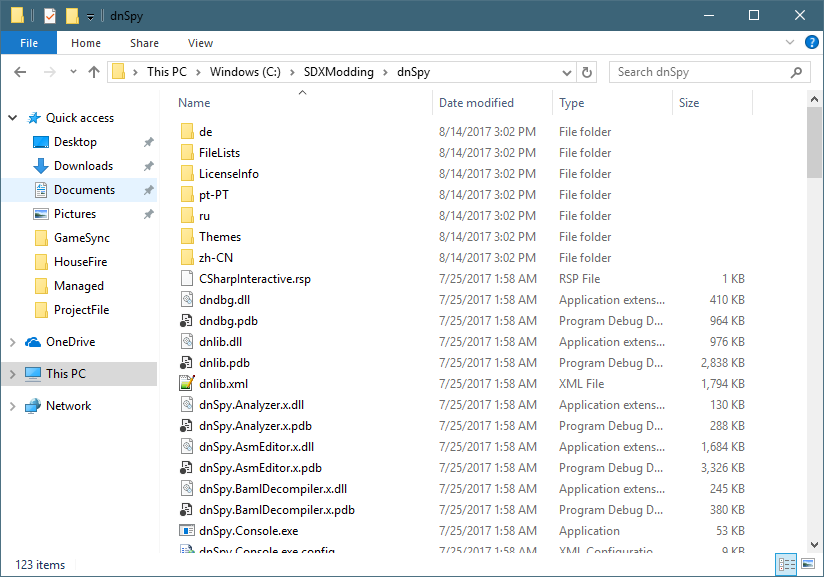
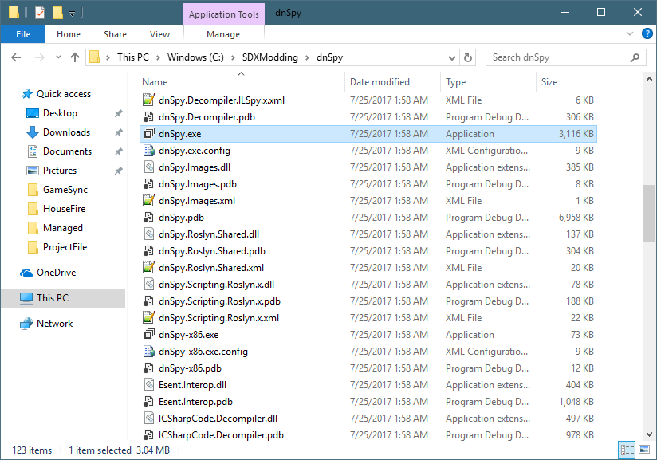
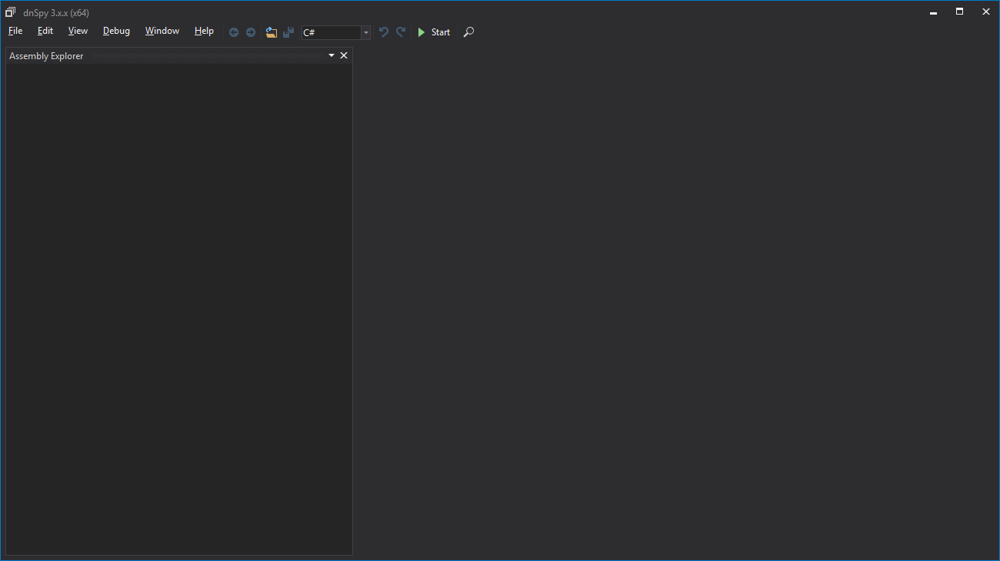
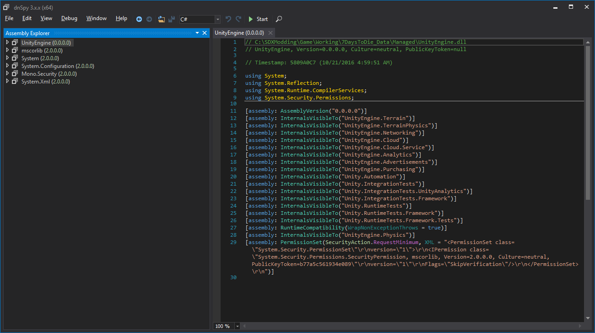

You'll find dnSpy under the C:\SDXModding\dnSpy\ folder, if you've started with the SDX Modding Kit

Scroll down until you see dnSpy.exe, and double click on it:

Once loaded, you'll see a screen like this:

Depending on your computer setup, you may find some other files listed under the Assembly Explorer.

To make things clean for the purpose of this tutorial, go to the File menu, and click on "Close All". This will clear the list. You only need to do this for the tutorial purposes, as it makes a cleaner interface, and easier to understand.
Note: As you explore various DLL files using dnSpy, files will be added to the Assembly Explorer automatically. That indicates there's a link between the file you are looking at, and the new file.
Created with the Personal Edition of HelpNDoc: What is a Help Authoring tool?